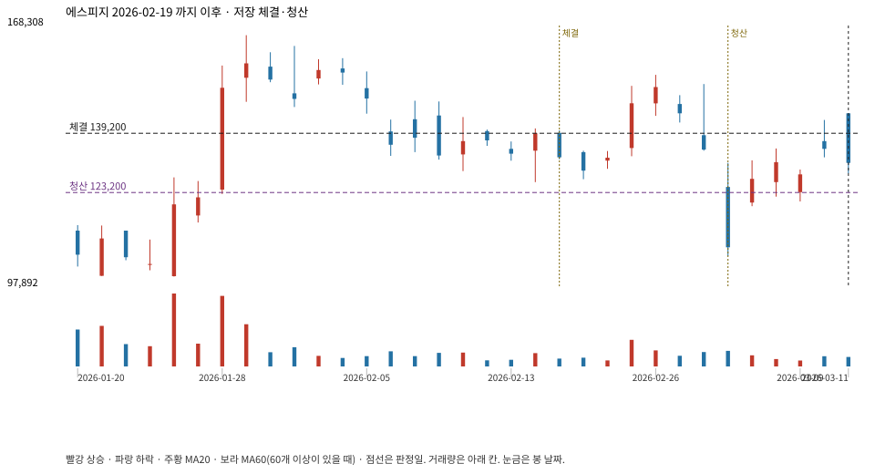

계좌를 다시 돌리지 않았다. 아래는 저장된 주문·체결·청산·비용·손익이다.

{
"case_id": "4267601391ee3077",
"status": "closed",
"trade": {
"symbol": "058610.KQ",
"signal_date": "2026-02-19",
"quantity": 3,
"entry": 139200,
"stop": 123262,
"target": 165700,
"planned_risk": 48786.094106999924,
"reserved_cash": 418017.6,
"fill": {
"date": "2026-02-20",
"price": 139200,
"fee": 417.6
},
"exit": {
"date": "2026-03-04",
"price": 123200.369,
"reason": "stop",
"net_pnl": -48786.09410699998,
"ambiguous_bar": false
}
},
"cost": "research fee 10bp each side, slippage 5bp; amounts below are the stored ledger, not a new run",
"chart": "c\/4267601391ee3077.svg"
}